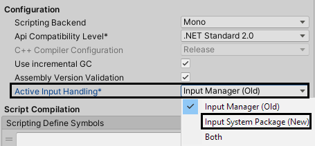
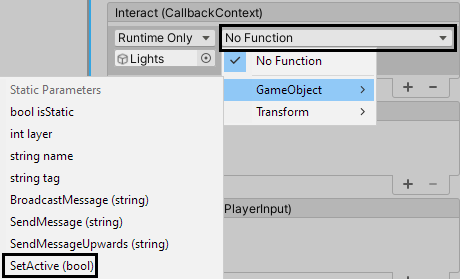

6 Input & Collisions¶
In the last chapter, you learned how to add a camera to the scene and set it up. You also mastered the art of using lighting and shadows to make the scene look great. In this chapter, you’ll learn about Unity’s input systems and how to use them to make the player avatar walk around.
Besides reading and using the player’s input, you’ll also discover how to use Unity’s physics system to make sure objects can’t fall through the floor. The combination of an input system and a physics system is the foundation for a lot of games out there. For example, it allows an avatar to run around on platforms, jump and bonk enemies on their heads.
Even real-world games like Jenga use a combination of the player’s dexterity and gravity to create fun gameplay! Once you’ve mastered the concepts in this chapter, you’ll be ready to create quite a few fun projects of your own.
Input systems¶
To get started, open the starter project for this chapter in Unity. If it wasn’t opened automatically, open the DiningHall scene located in RW / Scenes. You’ll see the familiar scene from the last chapter: a dining hall full of gladiators spreading their arms wide.
Before diving into setting up the input system, you need to understand what an input system is and what choices Unity offers.
The old code way¶
This might be glaringly obvious, but every game needs input from the player. Whether it’s a button press, the movement of a mouse or the swipe of a finger on a touchscreen, input is essential for games. In Unity, there are a few ways to go about capturing a player’s input — one of which is simply calling the Input class in a script like this:
void Update()
{
if (Input.GetKeyDown(KeyCode.Space))
{
Jump();
}
}
This will check if the Space key was pressed this frame when it wasn’t before with Input.GetKeyDown(KeycCode.Space). If so, a Jump method will be called. This will work perfectly, and you can use the Input class for both keyboard key presses and mouse clicks. Great! However, there are some huge limitations, as you can’t poll for gamepad button presses or joystick movement. On top of that, the key to jump in this example is hard-coded to Space with no easy way of changing that except for editing the script. Since players won’t be able to remap the key themselves, this way of implementing input won’t score you any accessibility points — as some disabled players won’t even be able to play.
Old input system¶
Of course, that’s only one way of going about polling for the player’s input. Unity comes with two input systems — the old one and the new one. The old input system is still the default and has been since the first release of Unity way back in 2005. Time for a small history lesson!
Instead of simply using KeyCode.Space in your script, you would define a virtual axis in the Input Manager, which can be found in Edit ▸ Project Settings ▸ Input Manager. The setup for mapping jumping to the Space key would look like this:
Every “virtual axis” has to have a name and at least one button, key or joystick axis. In this case, Jump is the name of the axis and space is the key. You would then be able to check if the key was pressed in a script like this:
void Update()
{
if (Input.GetButtonDown("Jump"))
{
Jump();
}
}
This allows you to remap the key or button in the Input Manager, and even allows you to map multiple keys to the same axis name. This system even allowed for remapping keys by players before starting up the game in a configuration screen, but the developers have removed this feature in recent versions. This system was usable, but it’s clunky, hard to set up and about as fun as filling in tax forms. You need to know the names of the keys, buttons and joystick axes to use them because there’s no drop-down or system where you simply press the key or button you want to map. Not ideal!
New input system¶
This is where the new input system comes into play! This system has been in development since 2018 and has been officially out of preview since 2021. It’s now a built-in part of Unity and is much more intuitive once you get the hang of it. It features cross-platform compatibility, the ability to remap controls at runtime, an input debugger and it binds actions to controls. Pretty sweet!
The new input system will likely become the default in Unity at some point, but for now you’ll have to switch to it manually.
Setting up the new input system¶
The first step to switching over to the new input system is opening the Project Settings by navigating to Edit ▸ Project Settings…. Now select Player at the left-hand side to open the Player settings.
Next, scroll down in the Other Settings section of the Player settings until you see Configuration. The last option here is Active Input Handling with a drop-down next to it. Make sure that Input System Package (New) is set here.

If you changed the setting, a dialog window will now pop up asking if you would like to apply the change. Click Apply to let the Unity editor restart itself.
Next, wait for the editor to reload and then close the Project Settings window.
Input actions¶
Now the new input system is activated, you’ll need to create an Input Actions file to map the player input to actions. To do this, first create a new folder in the RW folder named Input.
In this new folder, create a new Input Actions file by pressing the + button at the top left of the Project window and selecting Input Actions (the last option in the list).
Name this file Input, then double-click it to open the Input window.
This is where you define your control schemes, action maps, actions and the accompanying input bindings.
Control schemes¶
First, you’ll need to add control schemes. These are the physical devices you want to support, like keyboards, gamepads, touchscreens and even accelerometers.
Click on the control scheme drop-down at the top left that says “No Control Scheme” and select Add Control Scheme…
A popup window will open to let you add a control scheme. Change Scheme Name to Gamepad and click the + button at the bottom left of the control list that says “List is Empty.” A selection screen will pop up to allow you to select a control scheme.

Select Gamepad ▸ Gamepad here and click the Save button to add the Gamepad control scheme to the Input Actions file.

You can now link gamepad button presses and analog stick inputs to actions, but you’ll surely want to be able to use your keyboard as well. So, add another control scheme via the drop-down at the top left. This time, name the new control scheme KeyboardMouse and add two entries to the empty control list: Keyboard and Mouse ▸ Mouse.
Like before, click the Save button to add the control scheme. Next, select All Control Schemes in the drop-down at the top left. This makes it so you can now poll input from game controllers, keyboards and mice when creating input bindings. Nice!
Action maps¶
Now that you’ve decided on the input methods, the next step is to create an action map. This is a set of actions that are related to each other in some way. For example, take a game that has the player avatar walking on foot, but also occasionally riding on horseback.
You can create two action maps in this case to separate the controls — one called “On foot” and one “Riding horse.” Each of these action maps can have unique actions for the player to do. This separation also allows you to let the player rebind the controls per action map easily — and more customization options are always better!
For the sake of simplicity, you’ll stick to a single action map that handles all of the player input for this project. Create a new action map by clicking the + button at the top right of the Action Maps list and name this new action map Player.
You’ll notice Unity has automatically added an action named New action to the Actions list.
Actions¶
An action is something that can be done in-game that needs to be linked to the player’s input. This can be a jumping, shooting, moving, whistling, etc. You need an action for just about anything an avatar can do so the player can perform it.
First, rename the default action to Interact by right-clicking New action and selecting Rename. Or, press the F2 key (for Windows) or the Enter key (for Mac) to start renaming.
With the action named properly, take a look at the Properties list on the right.
This panel changes depending on the selected item in the Actions panel, but Interactions and Processors are always present. The Interact action you’ve selected has an Action Typeproperty. This is a drop-down with the following options:
- Button: This is the default action type. It’s used for actions that are triggered every single time by a single button or key press. This can be used for a jump or interacting with an NPC, for example.
- Value: This action type is used for actions with continuous changes in value where a joystick or button is held down — like for movement or looking around. When multiple buttons or directions tied to the action are input at once, the most dominant one is chosen.
- Pass Through : The Pass Through action type works exactly like Value, except that there’s no dominant input chosen, meaning all inputs will be used at once.
In most cases, you’ll use either use the Button or Value action type.
Interactions and Processors are modifiers of an action. These can enforce that a button needs to be held down for a certain amount of time before triggering an action by using the Hold interaction, for example. An Invert processor simply inverts the input. These are used for more advanced inputs so this book won’t cover them in detail.
Now, click on the little arrow to the left of the Interact action. This will reveal the list of bindings tied to the Interact action. The list only holds a single empty binding for now.
Bindings¶
A binding is the player’s input, like button presses, the state of a joystick or even the movement of a VR controller. This is what connects an action to the physical world.
The player avatar should be able to interact with its surroundings when the player either presses the Space key or presses the bottom face button on their gamepad (A on Xbox controllers, X on PlayStation controllers).
Select the
Here’s a brief overview:
- Path: This is where you set the input path — like a specific button, key or other input, for example. The T button next to it allows you to set the path string manually instead of choosing it from the list.
- Use in control scheme: These checkboxes allow you to restrict this binding to a certain control scheme. When no checkboxes are checked, the binding is active for all control schemes.
Time to bind some input to the Interact action! The first input you’ll bind is the Space key, so click on the Path drop-down to open the selection screen.
You can select the Space key by selecting Keyboard ▸ By Location of Key (Using US Layout) ▸ Space or by simply clicking the Listen button at the top left, pressing the Space key on your keyboard and selecting Space [Keyboard].
Your first binding should now be named Space [Keyboard]. To add another binding to the same action, click the + button next to the Interact action and select Add Binding. Another empty binding will now appear in the list.
This time, the binding should be linked to the bottom face button of any supported gamepad. In traditional input polling, this would be a nightmare, since just about every brand of controller binds their buttons differently. Luckily, Unity’s new input system allows you to bind gamepad buttons to their physical position based on the cardinal directions (north, east, south and west).
To add a gamepad south button binding, select the empty binding, click on the Path drop-down and select Gamepad ▸ Button South.
The Interact action is now complete! When the player presses the Space key or the bottom button, the action will be triggered.
Next up is the movement, for which you’ll want to poll the following player inputs:
- Left analog stick on gamepads
- WASD keys
- arrow keys
As you can imagine, the setup for this action will be quite different from the Interact action. Create a new action by clicking the + button next to the Actions label and name the new action Move .
Change its Action Type to Value and its Control Type to Vector 2 in the Properties panel on the right. The Value type allows for continuous input needed for movement while the Vector 2control type means the movement input will have an x- and a y-axis value between -1 and 1. For example, (X:1, Y:0) is the same as pointing an analog stick to the right.
Adding the left analog stick as a binding is straightforward. Click on the empty binding of Move and select Gamepad ▸ Left Stick in the Path list. The Left Stick input outputs a Vector 2out of the box, so there’s no extra setup needed.
The next binding is the WASD keys. For this you’ll need to add a 2D Vector Composite, so click the + button right from the Move action and select 2D Vector Composite in the list. Name this new composite WASD.
If you take a closer look at the WASD composite, you’ll see it’s composed of four bindings named Up, Down, Left and Right.
A binding is a simple one-input, one-value system, while a composite allows for multiple inputs that result in one final value. The illustration below shows how the WASD keys can be mapped onto the x-axis and y-axis to generate a Vector 2, with an X and a Y value:
To apply this to the WASD composite, set the following paths for the four bindings. Do this by clicking the Path drop-down, clicking on the Listen key and pressing the appropriate key on your keyboard. This is exactly like you did it for the Space key in the Interact action.
- Up: W [Keyboard]
- Down: S [Keyboard]
- Left: A [Keyboard]
- Right: D [Keyboard]
The end result should look like this:
For the arrow keys, add another 2D Vector Composite to the Move action and name it Arrow Keys. The concept here is exactly the same as with the WASD keys, but this time set up the following bindings for the four directions:
- Up: Up Arrow [Keyboard]
- Down: Down Arrow [Keyboard]
- Left: Left Arrow [Keyboard]
- Right: Right Arrow [Keyboard]
Here’s what that should look like:
That’s it for the input! You now have a full input scheme set up to make the player avatar move and interact with the world. Don’t forget to click the Save Asset button at the top to save the Input Actions file.
Now close the Input window and get ready to get the player avatar moving!
Linking input to movement¶
An Input Actions asset by itself isn’t enough to poll for the player’s input. For that, you’ll need to add a Player Input component.
Select Player Avatar in the Hierarchy and add a Player Input component to it by clicking on the Add Component button at the bottom of the Inspector.
Player Input component¶
This component uses an Input Actions file as its input, checks for any triggered actions and can pass the results along to a script. Click on the circular selection button next to the Actions property and select the Input Input Actions file you created earlier. Doing so adds some extra properties below Actions. Here’s what these are for:
- Default Scheme: The default control scheme (device) to use. You can set this to a particular scheme if you only want to poll input from a certain device. The default value of
goes through the list of control schemes and uses the first one that’s connected. - Auto-Switch: When this property is enabled, the control scheme will automatically switch when input is detected on a supported device. For example, if the player is using a keyboard to play the game and then decides to connect a gamepad and use that instead, the control scheme will switch from KeyboardMouse to Gamepad automatically. In games with multiple players (and multiple Player Input components) this won’t work. In that case, you’ll have to dedicate a controller or the keyboard to each player via the PlayerInput API.
- Default Map: The action map to start with. In a game with multiple action maps, this could be set to “UI” or “Menu,” for example, as the player starts at the title screen and needs some way to traverse that. In the case of the game you’re working on for this chapter, there’s only a single action map named Player.
By default, a Player Input component uses Unity Messages to call methods on a component on the same GameObject. For example, if the Interact action was triggered, an attempt to call an OnInteract method would be performed by Player Input on all components attached to Player Avatar. As you can imagine, this isn’t effective performance-wise and the behavior would break when an action gets renamed. A good idea would be to invoke Unity Eventsinstead - this can also call methods, but it’s a much more flexible system that you can set up in the editor instead of relying on the names of actions and methods.
To get started with Unity Events, change the Behavior property to Invoke Unity Events using the drop-down.
A new property called Events has now appeared below Behavior. If you expand Events, another property named after the Player action map and a set of Unity Events show up.

The first two of the events, Device Lost and Device Regained can be used when a device has been disconnected and reconnected, respectively. This can be used to detect when a gamepad has been unplugged or ran out of battery, for example, and you could pause the game as a reaction. The Controls Changed event triggers whenever the player switches their active device, like from a keyboard to a gamepad.
That’s all good and well, but how do you react to the Interact and Move actions? That’s where the Player property comes in! It’s linked to the Player action map, so if you expand it, you’ll see that events appear for both the Interact and the Move actions.
To test out if this works, you can turn off the lights in the scene when you trigger the Interactaction by pressing Space or the bottom button on your gamepad. Click on the + button at the bottom right of the Interact event to add a new empty function call.
A function call can access the properties and methods of components that should be called or changed.
In this case, the Lights GameObject in the Hierarchy should be disabled. Drag Lights to the Object field of the Interact event to fill the function list on the right.
Now select GameObject ▸ SetActive (bool) in the function drop-down (it says “No Function” at the moment).

A property will appear that fits the type of property of the selected function. In the case of SetActive, this is a Boolean, so a checkbox appears. The lights should be disabled when the event is triggered, so the default off state is perfect. Now run the scene by clicking the Playbutton at the top of the editor. Try pressing Space on your keyboard — the lights should go off!
This is one reason why Unity Events are so powerful — it’s easy to wire things together like this.
Before moving on, remove the function call to the Lights by selecting Player Avatar, expanding Events ▸ Player and clicking the - button at the bottom right of the Interact event.
Character Controller component¶
At this point, you can take the player’s input and use it in any way you want. To get the avatar moving through the scene, you’ll need a component that handles the avatar’s movement without moving through the floor or walls. You could script this yourself, but Unity comes with a handy component built-in: a Character Controller. Add one to the Player Avatar by clicking the Add Component button at the bottom of the Inspector, searching for “Character” and selecting Character Controller in the list.

The Character Controller component adds a capsule-shaped collider to Player Avatar that can be moved in any direction via scripting. The component will automatically walk up stairs and slopes and will be stopped by walls if they have colliders.
The default values for the Character Controller component’s properties are just right for the potato warrior model, except for Center, which is used to set the center of the capsule. The default value of (X:0, Y:0, Z:0) lodges the capsule in the ground as you can see in the Sceneview.
To fix this, set Center to (X:0, Y:1, Z:0). The bottom of the capsule will now touch the ground. If you played the scene now, there would be no difference just yet, as the Character Controllerneeds to be called from a script for it to work.
Scripting the movement¶
Time for some scripting! To start, the movement input should be processed and passed to the Character Controller. Create a new folder in RW / Scripts and name it Player. Right-click inside this folder, select Create ▸ C# Script and name the script PlayerAvatar.
Double-click the script to open it in your code editor.
To start, add this using directive just below using UnityEngine; at the top:
using UnityEngine.InputSystem;
This adds a reference to the InputSystem namespace, which is needed to access methods and variables of the new input system. Now, add these variable declarations right above the Start method:
public float movementSpeed = 5f; // 1
public float rotationSpeed = 10f; // 2
public float gravity = 20f; // 3
public Animator animator; // 4
private CharacterController characterController; // 5
private Vector2 movementInput = Vector2.zero; // 6
private bool allowInput = true; // 7
Here’s what these are for:
- The speed of the movement in meters per second.
- When the character changes direction, it will turn to face the direction it’s moving in. This is the speed of that turning in degrees per second.
- The force of the gravity that will be applied to the avatar every second.
- A reference to the 3D model’s Animator component, which can change the currently playing animation. This will be used to switch between the idle and the walking animation.
- A reference to the Character Controller component to be able to make it move.
- This keeps track of movement input provided by the Player Input component.
- A Boolean to easily allow or disallow input to be passed through. The dialogue system will use this later to disable movement input when the avatar is talking to an NPC.
Next, rename the Start method to Awake and add this line to its body:
characterController = GetComponent<CharacterController>();
This line gets a reference to the Character Controller component and saves it to characterController. Now, add the Move method below Update:
public void Move(InputAction.CallbackContext context) // 1
{
if (!allowInput) // 2
{
return;
}
movementInput = context.ReadValue<Vector2>(); // 3
}
This Move method will be called from the Move event in the Player Input component every time the player presses the WASD keys, the arrow keys or move the left joystick on their gamepad. Here’s a breakdown of the code:
Moveaccepts a single parametercontextof the typeInputAction.CallbackContext. TheCallbackContextcontains all information about the input action — like when exactly it was started and what the current phase and value is.- If no input is allowed, don’t do anything and simply return.
- Read the
Vector2value from theCallbackContextand store it inmovementInput.
Next, add this method below Move:
private void UpdateMovementAndRotation()
{
// 1
Vector3 movementVector = new Vector3(-movementInput.y, 0, movementInput.x);
// 2
characterController.Move(movementVector * movementSpeed * Time.deltaTime);
// 3
transform.rotation =
Quaternion.Slerp(transform.rotation,
Quaternion.LookRotation(movementVector),
Time.deltaTime * rotationSpeed);
}
This code will read the movement input and send it to the character controller. It will also rotate the avatar towards the direction of the movement. Here’s what’s happening line by line:
- Convert the 2D X and Y input to 3D movement and store it in
movementVector. The illustration below shows a top-down view of the dining hall scene. Moving toward the door at the back means moving along the x-axis while moving side to side is along the z-axis. The movement input however maps left and right to the x-axis and up and down to the y-axis.
- Call the
Movemethod on the character controller.movementVectoris the direction,movementSpeedis the speed andTime.deltaTimeis used to ensure the movement is steady and frame-rate independent. - Smoothly modify the rotation of the avatar over time by using a spherical linear interpolation (slerp). The slerp takes the current rotation and will change it each frame until the avatar is facing in the direction of
movementVectorat the speed set inrotationSpeed. This is a way to animate GameObjects with scripting. More on that in Chapter 12!
Next, you’ll apply the gravity — so add this code below the UpdateMovementAndRotationmethod:
private void UpdateGravity()
{
characterController.Move(Vector3.down * gravity * Time.deltaTime);
}
All this does is use the character controller to move the avatar down toward the floor with a force set in the gravity variable.
To bring it all together, add this to Update:
if (movementInput != Vector2.zero && allowInput) // 1
{
UpdateMovementAndRotation(); // 2
animator.SetFloat("Speed", 1f); // 3
}
else // 4
{
movementInput = Vector2.zero;
animator.SetFloat("Speed", 0f);
}
UpdateGravity(); // 5
Here’s what’s happening:
- If the movement input isn’t (X:0, Y:0) and input is allowed, proceed.
- Update the movement and rotation based on the input.
- Call the Animator component’s
SetFloatmethod to start the walking animation. - If there’s no movement input or input isn’t allowed, reset the movement input and stop the walking animation.
- Update the gravity so the avatar can’t float.
That finishes up the script! Save it and return to the Unity editor. Select Player Avatar in the Hierarchy and add the newly created Player Avatar component. Change Movement Speed to 3 and Gravity to 15.
Next, expand Player Avatar in the Hierarchy and drag Model to the Animator property to add it as a reference.
The final step is to link the Move action to the Move method you just added in the script. In the Player Input component, expand Events ▸ Player and create a new empty function to the Move event by clicking the + button at the bottom right.
Finally, drag Player Avatar to the Object property and select PlayerAvatar ▸ Move in the Function dropdown.
Now, play the scene and enjoy the magic of locomotion! Use either the WASD keys, the arrow keys or the left analog stick on a gamepad to move the player avatar around. Can you find all the moved player avatars in the image below? :]
It can get a bit awkward to walk around while the camera remains stationary because it can be hard to see the avatar when it’s at the back of the scene.
Use the included simple component called Third Person Camera to make the camera follow a GameObject around. Add this component to Main Camera and drag Player Avatar to its Transform To Follow property. As a final step, set the value of Position Offset to (X:6, Y:5, Z:0).
Play the scene again and move the avatar around. The camera will now follow along!
Physics¶
Now that you can move the character around, you might have noticed you can move through the tables and the NPCs. While the scene comes with the colliders needed for the geometry, no colliders have been added for most props. Select Colliders in the Hierarchy and take a look at the scene view. All of the green boxes you see around the scene are box colliders that have been set up for the geometry.
To get a better look, you can change the Shading Mode to Wireframe from Shaded, as shown below. Remember to change it back!
Unity uses a physics engine called PhysX that calculates collisions between colliders. Colliders are simple 3D shapes that represent their high resolution counterparts. Some examples include boxes, spheres and capsules. Each of these colliders has a dedicated component.
The Character Controller component Unity provides only does a small subset of the physics calculations — so while it may not be realistic, it’s optimal for avatars that simply need to be able to move around without falling through floors while being able to climb stairs and slopes.
Adding colliders is a matter of adding a collider component with the most appropriate shape and setting up its size.
To start off with the tables, expand Props ▸ Tables & Benches ▸ Tables in the Hierarchy. This will unveil all of the tables. Next, select all of the Table GameObjects and add a Box Collidercomponent to all of them via the Inspector.
Here’s a quick overview of a collider component’s properties:
- Edit Collider: This button enables the collider editing mode and allows you to drag around handles in the Scene view to adjust the shape of the collider.
- Is Trigger: By default, a collider is used to make a GameObject solid when it comes to physics — allowing for collisions that call the
OnCollisionEnterfunction. By checking the Is Trigger checkbox, the collider becomes a trigger and will let colliders pass through. When a collider enters the trigger, theOnTriggerEnterfunction gets called. - Material: You can choose a physics material here if you made one. A physics material provides custom properties to a collider to make it more grippy or bouncy for example.
- Center: The local position of the collider in the scene.
- Size: The size of the cube.
If you now look at the Scene view, all of the tables have a green colored collider around them.
The great thing about adding collider components to GameObjects that have a Mesh Renderer attached to them is the collider auto sizes itself as best it can. In the case of the tables, it’s a perfect fit! Next up are the benches. Expand Props ▸ Tables & Benches ▸ Benches, select all of the Bench GameObjects and add a Box Collider component to them. This will make for perfect fits again.
Now, play the scene again and try bumping into the benches and tables. You might step onto them in some cases, but you won’t be able to phase through them like a ghost anymore. :]
The last geometry colliders to add are for the fire pits in the middle of the room and the barrels at the back. You’ll use capsule colliders for these, since they have a round shape. Expand Props ▸ Fire Pits and select both of the FirePit GameObjects. Now add a Capsule Collider component to both of them. This will add a sphere-shaped collider to both of the fire pits. Next, do the same thing for the barrels found in Props ▸ Barrels.
If you play the scene now, you’ll see the colliders around the fire pits will prevent the avatar from walking through the fire, but you can still stand atop the flames. Yikes!
Fix this by changing the height of the Capsule Collider to 3.
Now, play the scene and see if you can make the avatar move through objects. It shouldn’t work anymore — except for the poor NPCs who keep getting ghosted, of course.
Can you guess what collider shape you’ll need to use for the NPCs? That’s right — even more capsule colliders!
Expand Interactable ▸ NPCs , select all of the NPCs inside and add a Capsule Collidercomponent to all of them. This time, the collider didn’t even make an attempt to get the position and the size right because there’s no Mesh Renderer attached to the root GameObject of the NPCs. Not a problem though — just set Center to (X:0, Y:1, Z:0), Radius to 0.5 and Height to 2 just like you did for the player avatar.
Play the scene once again and bump into the NPCs. Their vegetable bodies are now solid like they should be.
Congratulations on finishing this chapter! You’ve learned all about implementing input in a game and the basics of the Unity Physics system. In the next chapter, you’ll take a look at how to add a user interface to the game.
Key points¶
- Unity comes with two input systems: the old one and the new one. The former is enabled by default.
- You can enable the new input system via Edit ▸ Project Settings… ▸ Player.
- To start mapping controls to actions, you need to create an Input Actions file.
- A control scheme is a collection of physical devices like keyboards and gamepads.
- An action map is a set of actions that are related to each other in some way.
- An action is something that can be done in-game that needs to be linked to the player’s input.
- A binding is the player’s input. It connects an action to the physical world.
- A composite allows for multiple input bindings that result in one final output value.
- To use the Input Actions file and poll for input, you need a Player Input component.
- Events get called when input actions are triggered. These events can call functions, which can change properties of components and/or call methods.
- A Character Controller is a simple component for moving an avatar around a scene. Its
Movemethod needs to be called from a script. - Colliders are simple 3D shapes that represent their high-resolution counterparts. Some examples include boxes, spheres and capsules.
- A collider component automatically adjusts its size when a Mesh Renderer component is also attached to the same GameObject.